Тест №3. Форматирование абзацев
Выберите
один
правильный ответ. После ответа на все вопросы нажмите кнопку «Готово».
Как скопировать формат по образцу:
Выделить, Главная
®
Копировать
Выделить, 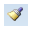, Выделить
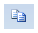, 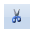
Главная
®
Копировать, Формат
Как правильно увеличить отступ ("красную строку"):
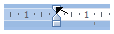
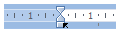
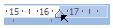
Как увеличить расстояние между строками в 2 раза 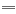
®
:
нажать после каждой строки 2 раза Enter
Главная
®
Шрифт
®
Интервал: разреженный
Главная
®
Абзац
®
Междустрочный: двойной
Кнопкой 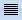
Как увеличить расстояние между абзацами по вертикали:
установить Курсор перед абзацем и нажать Enter
Главная
®
Шрифт
®
Смещение: ниже
Главная
®
Абзац
®
Отступ: перед
Главная
®
Абзац
®
Междустрочный: разреженный
Если в абзаце 3 строки, и после каждой из них нажата клавиша Enter, то как будет выглядеть текст, если увеличить размер шрифта в 1, 5 раза:
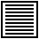
Сохранить документ – это:
придумать имя файла
записать документ из оперативной памяти на жесткий диск или иной носитель
нажать на кнопку , на вопрос ответить «Нет»
записать документ с диска в постоянную память
Как правильно поставить заголовок по центру:
Установить курсор перед заголовком и нажать несколько раз пробел
Установить курсор перед заголовком и нажать несколько раз Tab
Установить курсор на заголовок и нажать 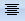
Установить курсор перед заголовком и передвинуть 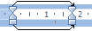
Чтобы строки абзаца были одинаковой длины, необходимо выделить абзац, а затем:
Главная
®
Абзац
®
Выровнять
Разметка страницы
®
Расстановка переносов
®
Авто
Shift + Enter
Как выбрать размер бумаги:
Разметка страницы
®
Параметры страницы
Перетащить черточки на линейке
Разметка страницы
®
Размер
Перетащить мышью правый нижний угол границы
Как установить поля страницы:
Разметка страницы
®
Параметры страницы
Крутить колесо мыши
Ваши ответы: